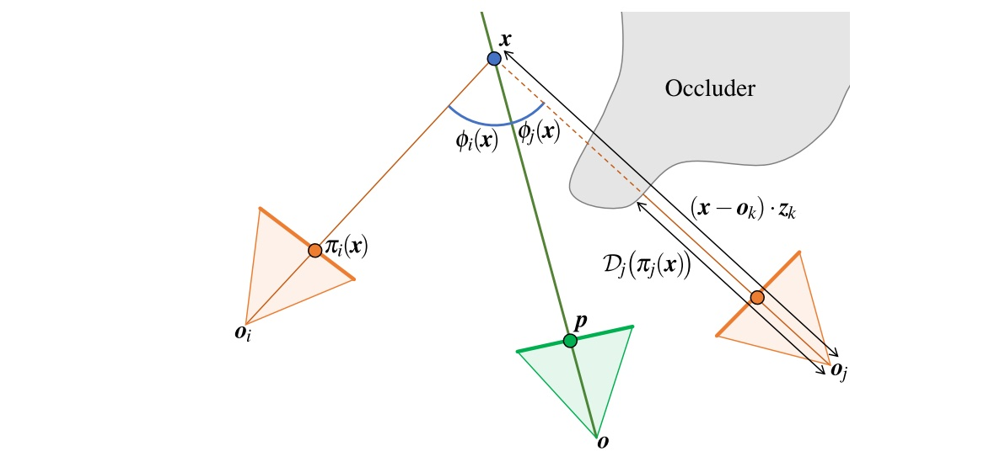

|
Ayush Saraf I am a senior research engineer at Meta Reality Labs based in New York, NY, where I work on computer vision, compute graphics and machine learning. At Meta, I work with anything 3D including 3D Photos, NeRFs and 3D GenAI. Email / Google Scholar / Twitter / Github |
{kind=link}
ResearchI'm interested in machine learning, computer vision, computer graphics, 3D reconstruction and GenAI. Much of my research revolves around creating 3D worlds by observing real world through images or by interpretting user's imagination via geneative models. |
|
|
OmnimatteRF: Robust Omnimatte with 3D Background Modeling
Geng Lin, Chen Gao, Jia-Bin Huang, Changil Kim, Yipeng Wang, Matthias Zwicker, Ayush Saraf ICCV, 2023 project page / video / paper / code |
|
|
Robust Dynamic Radiance Fields
Yu-Lun Liu, Chen Gao, Andreas Meuleman, Hung-Yu Tseng, Ayush Saraf, Changil Kim, Yung-Yu Chuang, Johannes Kopf, Jia-Bin Huang CVPR, 2023 project page / video / paper / code |
|

|
Boosting view synthesis with residual transfer
Xuejian Rong, Jia-Bin Huang, Ayush Saraf, Changil Kim, Johannes Kopf CVPR, 2022 project page / video / paper / code |
|
|
Dynamic View Synthesis from Dynamic Monocular Video
Chen Gao, Ayush Saraf, Johannes Kopf, Jia-Bin Huang ICCV, 2021 project page / video / paper / code |
|
|
AMICO: Amodal Instance Composition
Johannes Kopf, Kevin Matzen, Suhib Alsisan, Ocean Quigley, Francis Ge, Yangming Chong, Josh Patterson, Jan-Michael Frahm, Shu Wu, Matthew Yu, Peizhao Zhang, Zijian He, Peter Vajda, Ayush Saraf, Michael F. Cohen BMVC, 2021 project page / paper |
|
|
Flow-edge Guided Video Completion
Chen Gao, Ayush Saraf, Jia-Bin Huang, Johannes Kopf ECCV, 2020 project page / video / paper / code / google colab |
|
|
One shot 3d photography
Johannes Kopf, Kevin Matzen, Suhib Alsisan, Ocean Quigley, Francis Ge, Yangming Chong, Josh Patterson, Jan-Michael Frahm, Shu Wu, Matthew Yu, Peizhao Zhang, Zijian He, Peter Vajda, Ayush Saraf, Michael F. Cohen SIGGRAPH, 2020 project page / video / paper / code |
Miscellanea |
 |
Program Committe, XRNeRF CVPR 2023
Peer Reviewer, CVPR 2023 Peer Reviewer, ICCV 2023 Peer Reviewer, WACV 2023 Peer Reviewer, WACV 2024 Peer Reviewer, IJCV |
|
Template from Jon Barron. |